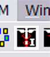
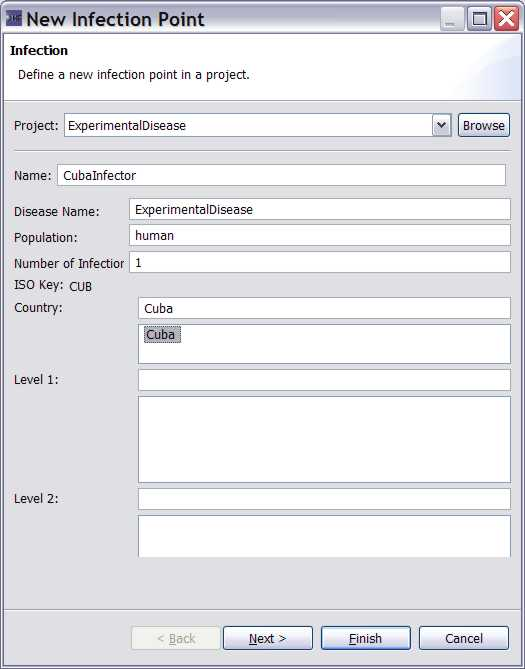

|
 |
|
Figure 1: The Infector Icon looks similar to the New Disease Icon but contains a capital letter 'I' in the lower right hand corner. |
Click on the new infector icon (black square with the health symbol and the letter I)
|  |
| Figure 2: Creating an Infector for Cuba. Here we are selecting a country level node. Note the location ID (CUB). |
save your work at this point by hitting <ctrl>S